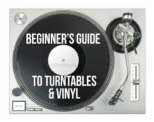

A step-by-step guide on the proper operation and handling of your own personal record player.
Start by setting up your player on a stable surface, then follow these steps to enjoy your vinyl collection with a smooth sound.
The first step in this process is an essential one; turn the record player on using the power button. Make sure all your cables are connected correctly before doing so, then you're ready to choose a vinyl and start listening! Next, lift the dust cover and place your vinyl on the platter. Ensure that the spindle goes through the center hole of the record, and set the record speed according to the type of vinyl you are using (33 1/3 RPM for LPs, 45 RPM for singles). Finally, you can press the start button if your player comes with one, or gently lift the tonearm, place the needle on the outer edge of the record to begin playback, and enjoy the music!
To stop playback, gently lift the tonearm off the record and return it to its resting position, or use the stop playback button if available. Finally, turn off the power when you're done listening, and close the dust cover to keep your record player clean.
An important aspect of record player maintenance is keeping everything clean, whether its the record itself, or the needle and tonearm. Dust and dirt can significantly affect sound quality and even damage your records over time. Investing in a good record cleaning kit and stylus brush can significantly prolong the life of your vinyl collection and ensure smooth playback.
Another key maintenance tip is to make sure you know how to properly handle your records. Always hold them by the edges to avoid getting fingerprints on the playing surface, and store them vertically to keep them from warping. Making sure your records all have proper sleeves can also help protect them from dust and scratches.